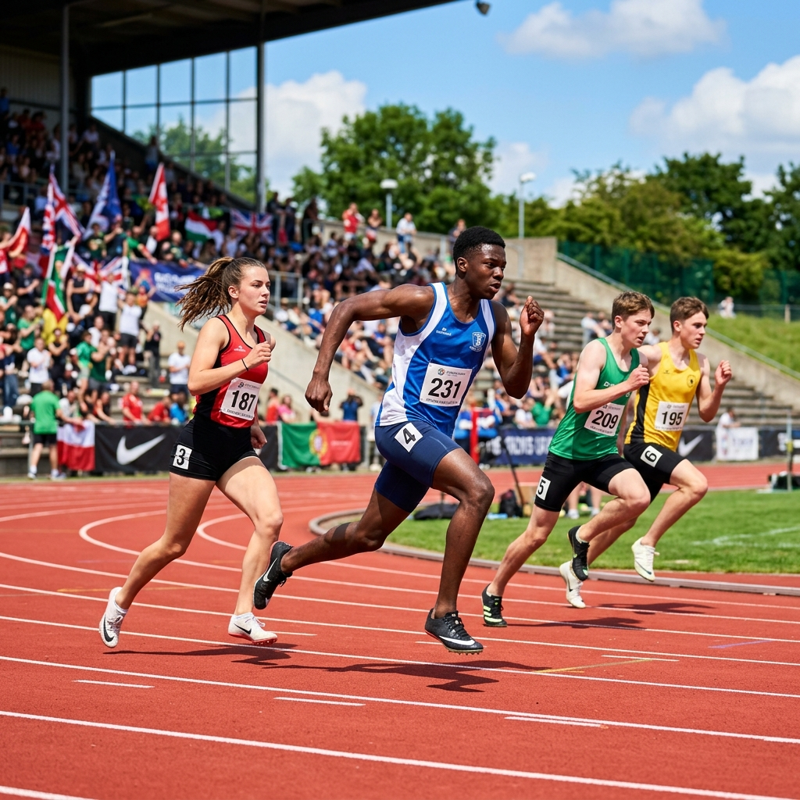

Corsi di Atletica Leggera: Crescere Attraverso il Gioco, lo Sport e l'Amicizia

Riepilogo Corsi di Atletica Leggera Virtus Groane ASD
- 👥 Fasce d'Età: Dai 5 anni (Gioco-Atletica Esordienti) fino al settore giovanile (Ragazzi, Cadetti), Assoluti e atleti adulti (Master).
- 📍 Sedi di Allenamento: Centri Sportivi Comunali di Solaro (Corso Berlinguer 2) e Limbiate (Via Tolstoi 84). A Senago è in fase di realizzazione la nuova pista a 6 corsie blu.
- ⏱️ Frequenza: Da 1 a 3 allenamenti a settimana in base a categoria e livello tecnico.
- 👟 Prova Gratuita: Tutto il mese di settembre è gratuito e senza impegno per il Settore Giovanile (oppure sessioni di prova concordabili durante l'anno).
- 📝 Iscrizioni e Quote: Iscrizioni 100% online su piattaforma Golee con quote annuali a partire da € 180 (previsto sconto fratelli).
- 🏅 Affiliazioni Ufficiali: Società affiliata FIDAL (Federazione Italiana di Atletica Leggera) e AICS/CONI.
L'atletica leggera in Virtus Groane ASD è molto più di uno sport: è una scuola di vita e di movimento guidata da istruttori qualificati FIDAL e laureati in Scienze Motorie. Dai primi passi di gioco-atletica per i bimbi delle scuole d'infanzia e primarie fino al perfezionamento tecnico dei settori Assoluti e Master, ogni atleta viene seguito con cura, passione e rispetto dei propri tempi di crescita.
"Da noi si corre per sé stessi ma non contro gli altri: si corre insieme."
Le nostre attività coprono i territori di Senago, Solaro e, temporaneamente, Limbiate. In attesa del completamento del nuovo polo d'eccellenza per l'atletica di Senago (dotato di una moderna pista a 6 corsie blu realizzata grazie all'impegno dell'Amministrazione comunale), i corsi su pista si svolgono presso i centri sportivi comunali di Solaro e Limbiate.
👟 Il mese di Settembre per il Settore Giovanile è sempre gratuito e senza impegno!
I genitori possono far provare i loro figli sui campi di Solaro e Limbiate con la massima serenità. Scopri come partecipare →
Tabella Sinottica dei Corsi di Atletica Leggera
Consulta la tabella comparativa per individuare immediatamente sede, giorni, orari e quote del corso adatto alla tua fascia d'età:
| Categoria / Corso | Anni di Nascita | Sede Impianto | |
|---|---|---|---|
| Frequenza & Giorni | Quota Indicativa | Iscrizione Online | |
| Esordienti (Gioco-Atletica) | 2019 - 2021 | 📍 Pista di Limbiate | |
| 1 o 2 gg / sett (Lun / Gio) | € 180 (mono) | € 250 (bi) | Modulo Limbiate → | |
| Esordienti (Avviamento) | 2016 - 2018 | 📍 Pista di Limbiate | |
| 1 o 2 gg / sett (Lun / Mer jolly / Gio) | € 180 (mono) | € 250 (bi) | Modulo Limbiate → | |
| Esordienti (Schemi Motori Base) | 2016 - 2021 | 📍 Pista di Solaro | |
| 1 o 2 gg / sett (Mar / Gio) | € 180 (mono) | € 250 (bi) | Modulo Solaro → | |
| Ragazzi e Cadetti (Transizione Pista) | 2012 - 2015 | 📍 Pista di Solaro | |
| 1 o 2 gg / sett (Mar / Gio) | € 180 (mono) | € 250 (bi) | Modulo Solaro → | |
| Ragazzi e Cadetti (Agonistica Pista) | 2012 - 2015 | 📍 Pista di Limbiate | |
| 3 gg / sett (Ragazzi: Mar-Mer-Ven | Cadetti: Lun-Mer-Gio) | € 300 annuali (anche a rate) | Modulo Limbiate → | |
| Settore Assoluti (Allievi, Juniores, Promesse) | 1993 - 2011 | 📍 Pista di Limbiate | |
| 3 gg / sett (Lun-Mer-Gio) + gare (Ven/Sab) | € 350 annuali (anche a rate) | Modulo Limbiate → | |
| Master (Solo Atletica) | 1992 e prec. | 📍 Pista di Solaro | |
| 2 gg / sett (Lun / Mer) | € 40 (Quadrimestre 2026) | € 110 (Annuale 2027) | Modulo Solo Atletica → | |
| Master & Juniores (Integrato Atletica + Triathlon) | 2008 e prec. | 📍 Pista di Solaro | |
| 3 gg / sett (Lun / Mer / Sab) integrati | € 85 (Quadrimestre 2026) | € 160 (Annuale 2027) | Modulo Atletica+Triathlon → |
Giovanili
I corsi giovanili hanno l'obiettivo di sviluppare gli schemi motori di base (corsa, salti, lanci) ed il lavoro di gruppo per i più piccoli, accompagnandoli poi verso la conoscenza ed il perfezionamento di tutte le specialità dell'atletica leggera.
👨👩👧👦 Sconto Fratelli:
Per le famiglie con più figli iscritti ai settori Giovanili ed Assoluti, è prevista la possibilità di usufruire di una riduzione sulla quota d'iscrizione a partire dal secondo fratello.
Assoluti
Corse veloci, ostacoli, mezzofondo, salti e lanci: un percorso dedicato alla pratica agonistica ed al perfezionamento nella propria specialità ideale.
👨👩👧👦 Sconto Fratelli:
È prevista la possibilità di usufruire di una riduzione sulla quota d'iscrizione a partire dal secondo fratello iscritto ai settori Giovanili o Assoluti.
Master
Un gruppo unito dalla passione per la corsa e l'atletica. Offriamo tabelle di allenamento personalizzate, test di valutazione e sessioni in pista assistite dai nostri allenatori.
ℹ️ Dettagli sull'iscrizione Master:
L'iscrizione Master va normalmente da gennaio a dicembre, analogamente al tesseramento FIDAL. L'iscrizione annuale verrà proposta a tempo debito.
L'iscrizione proposta dai due link sopra è quella per il periodo settembre-dicembre, scontata ma comprensiva di tesseramento FIDAL 2026.
Domande Frequenti su Atletica Leggera (FAQ)
Tutto quello che c'è da sapere sui corsi di atletica per giovani e adulti:
Da che età si può iniziare a fare atletica leggera con Virtus Groane?
L'attività comincia a partire dai 5 anni con la categoria Esordienti (corsi Gioco-Atletica per bimbi nati dal 2019 al 2021). Gli allenamenti puntano sullo sviluppo motorio naturale (correre, saltare, lanciare) in un clima inclusivo e divertente, prima di passare alle fasce agonistiche dai 12 anni.
Come funziona il mese di prova gratuito di Settembre per bambini e ragazzi?
Tutto il mese di Settembre è completamente gratuito e senza impegno per l'intero Settore Giovanile (Esordienti, Ragazzi e Cadetti). Basta presentarsi con scarpe da ginnastica e tuta sui campi comunali di Solaro o Limbiate nelle giornate di allenamento per provare la disciplina con i nostri tecnici.
Dove si tengono i corsi e come raggiungere le piste?
I corsi su pista si tengono presso il Centro Sportivo Comunale di Solaro (Corso Berlinguer 2) e il Centro Sportivo Comunale di Limbiate (Via Leone Tolstoi 84). Presso il Centro Sportivo di Senago (Via Giovanni di Vittorio 2) è in fase di realizzazione la nuova pista di atletica a 6 corsie blu: appena terminata, accoglierà atleti ed eventi regionali.
Tutte le posizioni GPS e le indicazioni sono consultabili nella pagina Dove ci Alleniamo.
Quale visita medica serve per iscriversi ad atletica leggera?
• Fino agli 11 anni (Esordienti): Certificato Medico per Attività Sportiva Non Agonistica con ECG a riposo.
• Dai 12 anni (Ragazzi, Cadetti, Assoluti, Master): Certificato Medico Agonistico per Atletica Leggera, rilasciato da un centro di medicina dello sport accreditato.
Maggiori dettagli e modulo societario nella pagina Visita Medica.
È previsto lo sconto fratelli per l'atletica leggera?
Sì! Per le famiglie con più figli iscritti ai settori Giovanili ed Assoluti è applicata una riduzione sulla quota a partire dal secondo figlio iscritto.